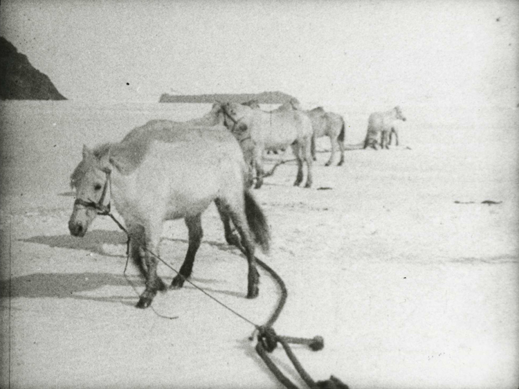

Chapter 11
The Motor Sledges Fall Silent
The motor sledge hauled itself onto the Barrier on 24 October 1911 with a sound that Lieutenant Evans would later try to describe in his engineering log: a high, strained note from the cylinders, the tracks grinding against snow crystals that were too cold to bind, too dry to pack. The machine carried 1, 200 pounds of supplies for the Southern Party. Behind it, the second sledge followed with similar load. They had left Cape Evans at noon, moving south across the sea ice with the confident pace of machinery that had not yet been asked to do more than roll on a prepared surface. The motor party, consisting of Lieutenant Evans, Day, Lashly, and Hooper, had started from Cape Evans on 24 October, their objective being to haul loads to latitude 80° 30’ S and wait there for the others.
By 3: 00 p. m., the first sledge had stopped.
The temperature was −15°F, cold enough to thicken the oil in the crankcase but not extreme by Antarctic standards. Evans recorded the failure in terms that would become familiar over the following days: the tracks had broken through the crust of wind-hardened snow and sunk into the softer layer beneath. The engine pulled at full throttle. The tracks spun. The machine sank to its axles in a substance that behaved like neither the snow of engineering tests nor the ice of naval experience.
The surface Scott had observed from the Discovery expedition and again during the depot-laying journeys of the previous spring was the Great Ice Barrier, a frozen plateau rising gradually from the Ross Sea toward the Transantarctic Mountains, its upper layer shaped by wind into an endless series of sastrugi, hard ridges of crystalline snow that ran perpendicular to the prevailing wind. The motor sledges had been designed for ice. They encountered something more like coarse sand.
The second sledge stopped three hundred yards behind the first. Day, the mechanic, walked forward to join Evans. Together they examined the tracks. The design was sound in principle: continuous metal belts running over bogie wheels, distributing the machine’s weight across a broad surface. On hard snow or ice, this should have prevented the sinking that plagued traditional wooden sledges. But the Barrier’s surface was a composite. The wind crust supported a man’s weight, sometimes a sledge’s. The concentrated torque of the motor sledge’s drive wheels broke through. Once broken, the crust offered no purchase. The tracks churned in place, excavating their own graves.
Evans made his first entry for 24 October at 4: 30 p. m. The sledge had moved three miles from Cape Evans. It had taken four and a half hours. The average speed was less than one mile per hour, and most of that distance had been covered on the harder surface near the coast. Ahead lay 350 miles of Barrier before the Beardmore Glacier.
They camped where the machines had stalled. In the morning, Evans tried a modification. The sledges carried spare track plates and tools. He removed sections from the rear bogies, attempting to concentrate the drive surface and reduce ground pressure. The work took three hours in temperatures that dropped to −20°F overnight. His fingers, even in mitts, lost dexterity. The metal tools adhered to bare skin.
The modified sledge moved another half-mile before stopping again.
Scott was not with the motor party. He had remained at Cape Evans to supervise the final loading of the pony sledges and the departure of the main Southern Party, scheduled for 1 November. The distance between his position and the failing machines was twelve miles—close enough for daily communication by ski or dog team, far enough that he learned of the difficulties through secondhand reports carried by supporting parties who passed between the advance depot and the base.
On 25 October, Scott wrote in his journal that the motors were reported to be going well. The entry suggests he had received an optimistic message from Evans, or perhaps he was recording hope rather than observation. The discrepancy between this note and Evans’s engineering log—where the same date shows three hours of track repair for 400 yards of progress—establishes a pattern that would persist through the week. Information moved slowly. Interpretation moved faster.
By 26 October, Evans had abandoned the modification attempt. His log records a new strategy: the sledges would run only on the wind-hardened sastrugi ridges, avoiding the softer troughs between. This required constant steering correction, the heavy machines lurching from crest to crest like ships in a cross-sea. The speed dropped further. Fuel consumption increased. The theoretical range of the machines, calculated in the workshops of Paris and London, assumed steady progress across a uniform surface. The Barrier offered no such surface.
The second sledge failed first. At 11: 00 a. m. on 27 October, Day recorded a seized cylinder in the rear engine. The cause was never definitively established (Evans would later suggest ice in the fuel line, Day preferred a theory of inadequate lubrication in extreme cold), but the effect was immediate. The sledge became a 1, 200-pound anchor. The first sledge, still functional, was attached to tow it. Now one engine pulled two machines and double load.
They covered two miles that day.
Scott’s journal for 27 October shows no awareness of this development. He was occupied with the pony party, which had begun its own advance to the south. The animals, unloaded from the Terra Nova in January and wintered at Cape Evans, were in condition that the expedition’s veterinarians had assessed as adequate. Their loads had been calculated with precision: each pony would haul 200 pounds to Corner Camp, where supplies would be deposited for the main Southern Party’s use. This arithmetic assumed the motor sledges would deliver their own 2, 400-pound contribution to the same depot. The two systems were designed to be complementary. Neither was sufficient alone.
On 28 October, Evans abandoned the tow. The second sledge was unloaded, its supplies distributed between the first machine and a man-hauled sledge that had accompanied the motor party for precisely this contingency. The engine that had seized was partially dismantled; Day removed the cylinder head and found scoring on the piston wall that he recorded as beyond field repair. The sledge was marked with a flag and left on the Barrier, a metal monument to the limits of technology.
The first sledge continued alone. Evans drove it himself, with Lashly and Hooper managing the man-hauled sledge behind. Day remained with the wreckage, establishing a temporary camp to await retrieval or further orders.
The surface had not improved. Evans’s log for 28 October records heavy going—the standard Antarctic euphemism for conditions that reduced human or animal progress to a crawl. The motor sledge, even with half its original load, achieved three miles in six hours of continuous operation. The fuel consumption was now double the theoretical rate. The distance to Corner Camp was still forty miles.
Scott learned of the second sledge’s abandonment on 29 October, when a supporting party returned to Cape Evans with Day’s report. His journal entry for that evening shows the first crack in his administrative composure: he noted that the motors were giving trouble, one being derelict. The phrasing is significant. Derelict is a naval term, applicable to ships abandoned at sea. It implies total loss, not temporary disablement. Scott was recognizing, perhaps for the first time, that his technological gambit had failed not partially but completely.
He made no change to the main expedition plan. The pony party had already departed. The dog teams, under Meares, were scheduled to follow on 1 November. The motor sledges had been the first layer of his transport pyramid, designed to establish advance depots rapidly and return for second loads. Their failure transferred their entire burden to the remaining layers. The ponies would now have to haul supplies that machines were supposed to carry. The men would have to haul what ponies could not. The margin of safety, calculated with precision through the winter months, had evaporated before the main party left base.
On 30 October, Evans reached Corner Camp. His log records the arrival at 2: 00 p. m., followed by three hours of unloading. The sledge delivered 700 pounds of supplies—less than one-third of its designed capacity, achieved at the cost of one machine destroyed and six days of effort. The remaining fuel was insufficient for return to Cape Evans. Evans made the decision to abandon the last motor sledge where it stood, converting it into a depot marker with its own fuel and oil stored against possible future use.
He did not record this as failure. The engineering log for 30 October notes that Sledge No. 1 was deposited at Corner Camp with stores as per inventory. The inventory, when compared with the original loading manifest, shows the quantitative reality: 1, 800 pounds of supplies that should have reached 80° South remained undelivered, their absence to be compensated by men and animals already operating at their calculated limits.
The supporting party that accompanied Evans on his return to Cape Evans arrived on 1 November. They brought the news that Scott received in his hut on the morning of his own departure. His journal for that date, the last entry before he committed to the Barrier himself, contains a sentence that has been variously interpreted: he wrote simply that the motors were a failure. The simplicity is deceptive. It records fact without analysis, consequence without recrimination. But the context—written as the pony sledges were being harnessed for the journey south—reveals the pressure of immediate decision. Scott could not wait for alternative transport. The season was advancing. Amundsen’s location was unknown. The expedition would proceed with the resources that remained, and those resources were now definitively fewer than planned.
The arithmetic of this reduction can be traced in the depot records. Corner Camp, intended as a replenishment point for the journey to the Beardmore Glacier, contained 2, 100 pounds of supplies on 1 November 1911. The original plan had called for 4, 500 pounds. The deficit of 2, 400 pounds—precisely the designed capacity of the two motor sledges—would have to be carried forward by the ten ponies and the man-hauling parties that followed them. Each pony’s load increased from 200 to approximately 340 pounds. Each man’s sledge, in the supporting parties, absorbed an additional 50 pounds of personal burden.
These figures appear in no single document. They must be reconstructed from the loading manifests of 24 October, the depot inventories of 1 November, and the subsequent sledging records that show ponies failing earlier and more completely than the expedition’s veterinarians had predicted. No contemporary source states the connection between the motor sledge failure and the pony collapses. It is visible only in the accumulation of weight and the depletion of capacity.
Evans himself, in his post-expedition engineering report, would argue that the machines had failed through no defect of design but through conditions beyond anticipation. The snow surface, he maintained, was anomalous—softer than any previously encountered, harder than any that could have been tested in temperate-zone trials. This defense has merit. The Barrier’s variable crust was genuinely difficult to predict. But it does not address the strategic decision that placed the entire southern plan in dependence on untried technology, or the absence of contingency planning for the failure that occurred.
Scott’s own analysis, developed in later journal entries after he had experienced Barrier travel himself, would emphasize the false economy of the motor sledge program—the resources diverted from dogs and ponies to purchase and transport machines that proved useless. This judgment, written with the benefit of hindsight and the pressure of subsequent disaster, may overstate the case. The motor sledges represented not economy but optimism: the Edwardian faith that engineering could conquer environments that had defeated previous expeditions. Their failure was less a financial waste than a psychological blow, the first demonstration that Antarctic travel would not yield to modern methods as readily as the expedition’s planners had assumed.

The silence of the abandoned machines—one at the site of its mechanical seizure, one at Corner Camp—acquired symbolic weight as the southern parties passed them in the following weeks. Cherry-Garrard, in the supporting party that reached Corner Camp on 5 November, recorded the sight of the motor sledge standing there with its tracks full of snow, looking very forlorn. The image of technology stilled by environment would recur in later accounts, accumulating meaning that the original observers may not have attached. For the men who passed the wreckage in November 1911, it was simply a landmark, a point of reference in the featureless white. The larger significance grew with the knowledge of what followed.
The immediate consequence was redistribution. The ponies that had been loaded for 200-pound hauls were reloaded overnight on 1 November, before Scott’s main party left Cape Evans. The animals accepted the additional weight without visible distress; their condition, after winter grazing on the limited vegetation of Ross Island, was better than it would be at any subsequent point. Oates, responsible for their management, made no recorded objection to the increased burden. The adjustment appeared minor—a matter of packing rather than principle.
The additional 140 pounds per pony represented a 70 percent increase in working load, applied day after day across the 150 miles to the glacier’s foot. The ponies’ ration was fixed: 10 pounds of oats and 4 pounds of oilcake daily, calculated for 200-pound hauls on the measured surface between Cape Evans and the Beardmore. The increased work was not matched by increased food. The animals would draw on their own reserves, losing condition gradually until the deficit became visible in stumbling pace and labored breathing.
The fragility cascade was now in motion: one system’s failure transferring strain to the next, the next system’s limits approached earlier than planned, the margin for recovery narrowing with each sequential adjustment. The motor sledges had been designed to prevent exactly this progression, to provide a mechanical buffer between men and the full weight of their supplies. Their silence left no buffer. Men and animals would feel the direct pressure of the Antarctic environment, unmediated by technology, for the remaining 750 miles to the Pole and back.
The final engineering log entry for the motor sledge program was made by Day on 2 November, when he returned to Cape Evans with the salvageable parts from the first abandoned machine. He listed: two cylinders, one magneto, track plates (various), tools. The total weight was 340 pounds—less than the sledge had carried in a single load, more than the expedition could afford to discard. The parts were stored in Scott’s hut, occupying space that might have held additional provisions.
Scott departed with the main Southern Party on 1 November, before this inventory was complete. His last act at Cape Evans was to sign the orders for the dog teams’ departure, scheduled to follow his track to Corner Camp and beyond. The dogs, unlike the ponies, were not immediately affected by the motor sledge failure; their loads had been calculated independently, and Meares’s planning had not assumed mechanical assistance. But the dogs’ role was limited. They were to turn back at the glacier’s foot, their value exhausted at the point where the real ascent began. The ponies would continue, carrying the burden that machines had failed to lift, until they too were exhausted and the men took up the full weight themselves.
At Corner Camp on 5 November, the supporting party marked their route with cairns of snow blocks at three-mile intervals. They built these markers with the methodical care of men who understood that return navigation would depend on them. The motor sledge stood nearby, already half-buried in drift. The supplies it had delivered were stacked in canvas-covered piles, their weight measured and recorded: 700 pounds, against a plan that had required 2, 400.
The ponies passed this point on 7 November, reloaded again with supplies from the depot that machines should have carried further south. Their new loads were not recorded with precision; the expedition’s sledging journals, maintained by individual party leaders, show only total weights and daily distances. But the arithmetic is recoverable. Three tons of supplies had been planned for advance depots between Corner Camp and the glacier. The motor sledges were to have delivered two of those tons. The remaining ton, distributed across ten ponies, added 200 pounds to each animal’s burden beyond the original design.
Oates, watching his animals struggle through the soft snow that had defeated the machines, made the first of his private assessments. These survive only in fragmentary references, in letters written before departure and in comments reported by companions. But the pattern is clear. The soldier, experienced with horse management in conditions from India to South Africa, recognized overload when he saw it. He did not protest formally. The expedition’s command structure did not invite contradiction, and the season’s pressure allowed no delay for recalculation. He managed what he had been given.
The ponies moved south from Corner Camp on 8 November. Their pace, recorded in Wilson’s diary, was 1.5 miles per hour—sustainable for animals in good condition, marginal for those already carrying beyond their design load. The surface was the same that had stopped the motor sledges: wind crust alternating with soft troughs, the sastrugi running perpendicular to their line of march so that every step required lifting over a ridge or plunging through a break.
Within three days, the first pony showed distress. Its name was Jehu, a small Mongolian bred for cold climates but not for 340-pound hauls across unstable snow. On 11 November, Jehu stopped refusing food—a critical sign in expedition animals, indicating either illness or exhaustion. Oates recorded the observation without diagnosis. The pony continued, slower than its companions, its condition declining visibly.
The motor sledges had been designed to prevent this. Their specifications, developed in consultation with engineers who had never seen Antarctica, promised speeds of five miles per hour with loads of 1, 200 pounds, fuel consumption that would allow 200 miles of range, and operation by crews of two men who would ride rather than walk. The reality, measured in Evans’s logs and Day’s repair notes, was one mile per hour, 40-mile range, and crews of four struggling with track plates and cylinder heads in temperatures that froze exposed skin in minutes.
The gap between design and performance was not unique to Scott’s expedition. Contemporary motor transport in Arctic and Alpine conditions showed similar patterns: machines that functioned adequately in testing failed in field conditions that combined cold, variable snow, and the impossibility of workshop repair. But Scott’s expedition had committed to motors more exclusively than its predecessors, and with less fallback planning. The failure, when it came, left no alternative system in reserve.
The psychological cost is harder to document than the physical redistribution of load. Scott’s journal entries through early November show a man managing multiple pressures: the known failure of his first transport layer, the unknown location of Amundsen, the daily reports of difficult going from advance parties, the fixed deadline of Antarctic summer that would close the window for polar travel by late January. He wrote with controlled optimism, recording distances and conditions without the despair that later critics have attributed to him. But the control itself suggests strain. The leader who had planned meticulously through two years of preparation was now improvising, adjusting loads and schedules to compensate for losses that should not have occurred.
At Hut Point on 10 November, Scott received the final report from the motor sledge party. Evans and Day were back at Cape Evans, their mission concluded. The machines were abandoned, their fuel exhausted or preserved against some future contingency that would never arise. The supplies they had failed to deliver were now distributed across living transport that would consume its own reserves with every mile.
The ponies moved on. Their overload was not corrected. The plan that had assumed mechanical assistance continued as if the assistance had been provided, the deficit absorbed by animals that had no capacity to absorb it. Jehu collapsed on 14 November, three miles from Safety Camp. Oates shot it, the first of the casualties that would continue with mechanical regularity as the expedition approached the glacier’s foot.
The motor sledge stood at Corner Camp, its tracks filling with snow, its engine cooling toward ambient temperature. It would not move again. The supplies it had carried were already consumed or redistributed, its potential contribution to the polar journey exhausted in six days of struggle across forty miles of Barrier surface. The silence of its engine was complete. The sound that replaced it—harness creak, pony breath, human exertion—would dominate the southward march until the final summit of the plateau.
The ponies were overloaded with supplies the machines could not carry. Their inevitable breakdown had begun.